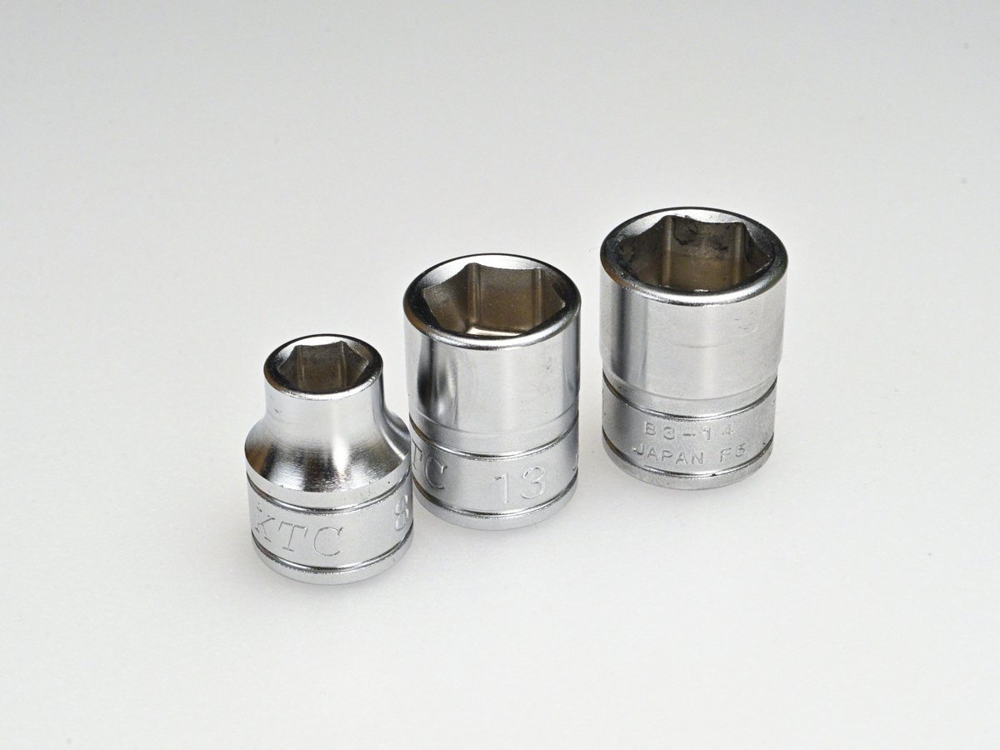
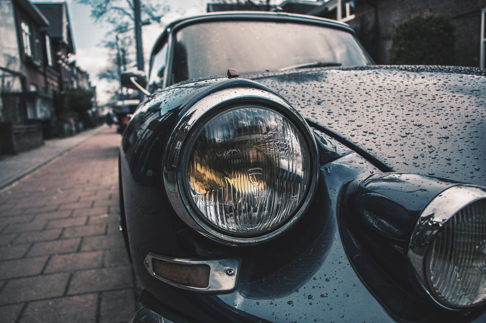
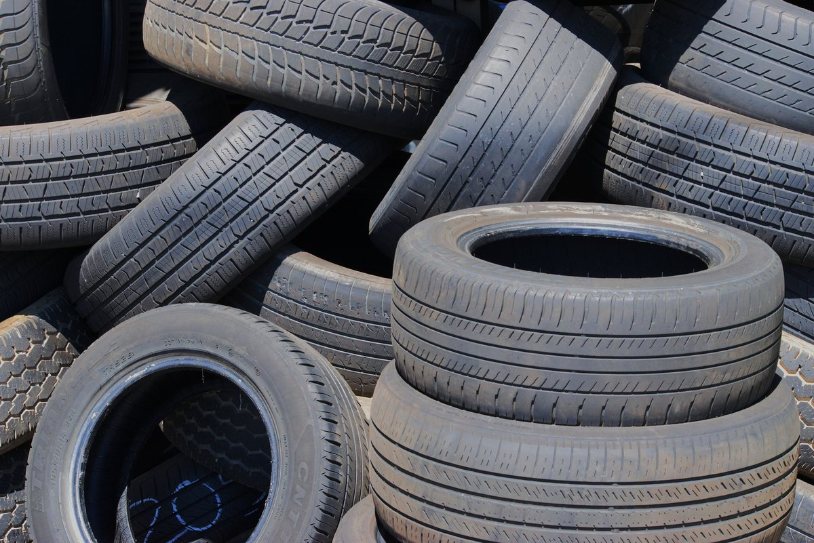
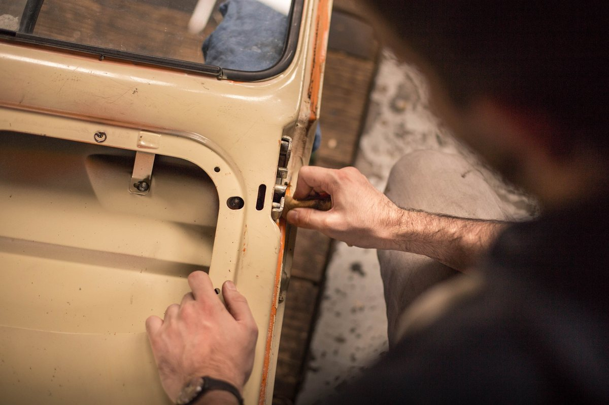
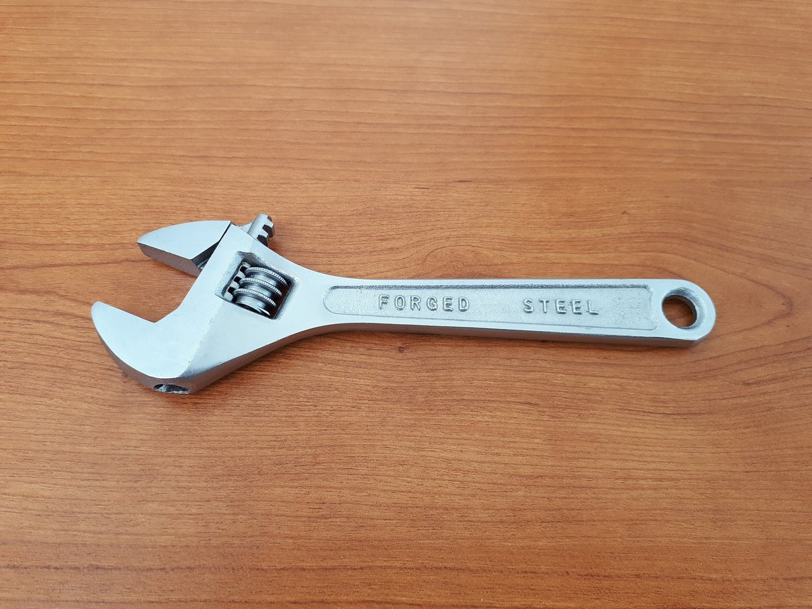
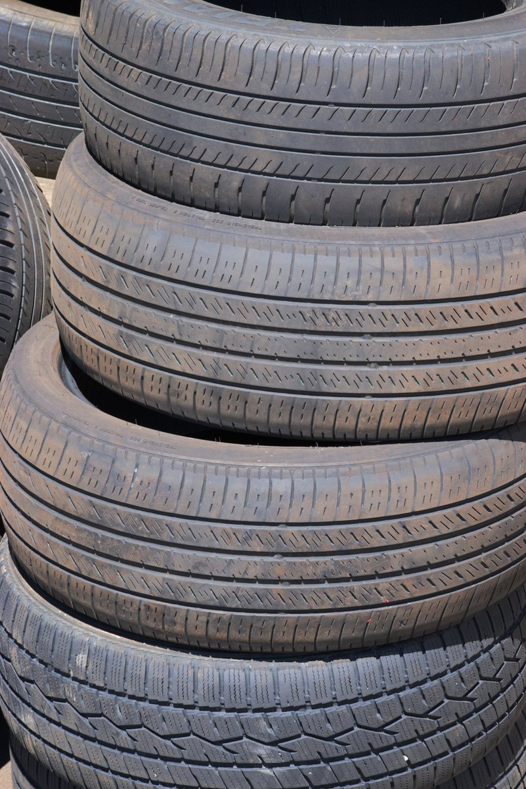

この写真のまま使えます（差し替えも自由）車検・法定点検
自社の整備工場で、点検・整備を行います。交換が必要な部品は、理由と金額をお伝えしてから作業します。

昭和58年の創業から、熊谷で車検と整備を続けてきました。国産車・輸入車、軽自動車からトラックまで。作業の前に、お見積りをお出しします。
車検も、ちょっとした異音も、ぶつけたキズも。どこに頼めばいいか分からないことは、まずお電話ください。

この写真のまま使えます（差し替えも自由）自社の整備工場で、点検・整備を行います。交換が必要な部品は、理由と金額をお伝えしてから作業します。

オイル交換、ブレーキ、バッテリー、エアコンの効きなど。季節のタイヤ交換や、タイヤの保管もお受けしています。

へこみやキズの修理、色合わせをした部分塗装。保険を使う修理のご相談にも応じます。
お見積りにご納得いただいてから作業に入ります。途中で追加が必要になったときも、先にご連絡します。
交換した部品は、お返しのときにお見せします。なぜ交換したのかを、実物で説明します。
車検・修理の間は、代車をお貸しします（台数に限りがあります。ご予約のときにお知らせください）。
昭和58年に、父がこの工場を開きました。
クルマは、毎日の買い物や通勤、仕事の足です。止まってしまうと、暮らしそのものが止まってしまう。だから、直すだけでなく、次に壊れそうなところを早めにお伝えするようにしています。
分からないことは、遠慮なく聞いてください。専門用語を使わずに、分かるまで説明します。

代表者・工場の写真が入ります| 商号 | 有限会社杜自動車 |
|---|---|
| 代表者 | 代表取締役 杜 勝 |
| 所在地 | 〒360-0000 埼玉県熊谷市○○1-2-3 |
| 電話／FAX | 048-000-0000 ／ 048-000-0001 |
| 創業 | 昭和58年 |
| 従業員数 | 6名（うち自動車整備士 4名） |
| 認証 | 関東運輸局長認証 第0000号（分解整備事業） |
| 営業時間 | 9:00〜18:00 |
| 定休日 | 日曜・祝日 |
お見積りは、無料です。
下の金額は、整備の作業代の目安です。車検の法定費用（重量税・自賠責保険料・印紙代）と、交換する部品の代金は別にかかります。

工場・作業の写真が入ります| 車検整備（軽自動車） | ◯◯,◯◯◯円〜 |
|---|---|
| 車検整備（普通車） | ◯◯,◯◯◯円〜 |
| 12か月点検 | ◯◯,◯◯◯円〜 |
| オイル交換（工賃） | ◯,◯◯◯円〜 |
| タイヤ交換（4本・脱着） | ◯,◯◯◯円〜 |
| タイヤ保管（1シーズン） | ◯,◯◯◯円 |
| 板金・塗装 | 現車を見てお見積り |
車検のご予約、修理のご相談は、お電話かメールでどうぞ。車検証の写しがあると、お見積りが早くなります。
受付 9:00〜18:00（日曜・祝日を除く）
〒360-0000 埼玉県熊谷市○○1-2-3／○○駅から車で7分